概述
- 本篇记录每天做的一些任务, 方向是 健康、人品、学问, 目标是不断优化带娃方案、实现年复一年、日复一日的进步和提升
一 家校任务
2025.11.18
数学楼老师
各位家长，今天的作业请关注数学书P64《10以内的减法表》的说规律：
竖着看，从上往下：减号左边的数每次多1，减号右边的数都是（ ），得数每次多1； 从下往上：减号左边的数每次少1，减号右边的数都是（ ），得数每次少1；
横着看，从左往右：减号左边的数都是（ ），减号右边的数每次多1，得数每次少1； 从左往右：减号左边的数都是（ ），减号右边的数每次少1，得数每次多1；
斜着看，从上往下：减号左边的数每次多1，减号右边的数每次多1，得数都是（ ）； 从下往上：减号左边的数每次少1，减号右边的数每次少1，得数都是（ ）。
其他：对今天做的的口算P34，35捉捉虫、查查错，说一说先算什么，再算什么。
- 今天壮壮10以内没过关
班主任郑老师
家长朋友们，今天下午和明天一整天，我外出学习，不在本校，
所以，假如有什么事在学校里就需要老师找孩子的话，请联系我们的副班主任楼老师[握手]
今明两天的作业如下：
今：
1、读第一第二第三课的词语，每个词语连读2遍
2、背第一第二第三课课文，每篇再背一遍
3、读书，听故事
明：
1、读第四课2遍（周四上第四课，先试着读，不会读的就跟着视频读）
2、背字母表1遍
3、1-3课的词语，要是前2天还没读熟的话，再读2遍
4、读书，听故事
2025.11.17
数学楼老师
各位家长，今天的作业请关注数学书P64《10以内的加法表》的说规律：
竖着看，从上往下：加号左边的数每次多1，加号右边的数都是（ ），得数每次多1； 从下往上：加号左边的数每次少1，加号右边的数都是（ ），得数每次少1；
横着看，从左往右：加号左边的数每次少1，加号右边的数每次多1，得数都是（ ）； 从左往右：加号左边的数每次多1，加号右边的数每次少1，得数都是（ ）；
斜着看，从上往下：加号左边的数都是（ ），加号右边的数每次多1，得数也每次多1； 从下往上：加号左边的数都是（ ），加号右边的数每次少1，得数也每次少1。
其他：对今天做的的口算P32，33捉捉虫、查查错，读一读课作本P39.40，练一练口算，准备一下明天的10以内一次过关。
班主任郑老师
今天语文回家作业：
1、背诵第3课《雪地里的小画家》
2、读第3课的词语（详见粘贴的词语表，可尝试听写最下面要求会写的几个）
3、预习第4课《四季》（朗诵视频，如果上次收藏过的话，可见到后面整册书的课文朗读）
4、读书、听故事
5、背字母表1遍
另，今天建议孩子们在自己的家校本之“劳动和阅读”的内容，可以试着自己写，可抄书名，也可用拼音，这样可以减轻家长负担。
2025.11.14
数学楼老师
- 对课作本P36进行说理，预习P38的有序思考。
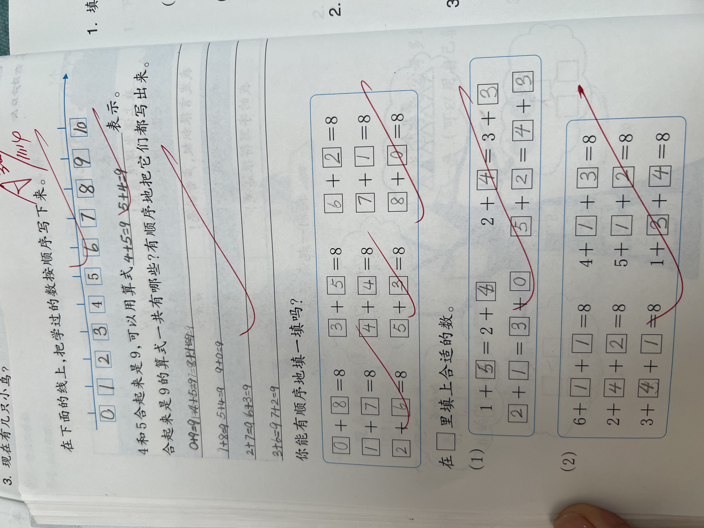
- 好好练习口算，下周将进行10以内的第一次过关。
班主任郑老师
双休日的作业如下：
1、背《江南》
2、读《秋天》和《江南》粘贴的词语，其中要求会写的词语，试试看，能否成功听写（下周在校听写争取全对）
3、预习第3课《雪地里的小画家》，课文读3遍。
4、背字母表1遍
5、看书，听故事
2025.11.13
数学楼老师
家长朋友们，今天我们继续学习了连加连减解决问题。部分小朋友对两步计算还不怎么熟练，回家可以翻翻课作本p34,35，如果错误较多，今天再巩固练习一下。
其他，对今天做的的口算P30，31捉捉虫、查查错，读一读课作本P36,37，练一练口算，准备一下明天的9以内二次过关。
[钉子]明天记得一定一定带上数学书和作业本！
班主任郑老师
家长朋友们，今天的回家作业：
1.读或背《秋天》3遍。
2.预习《江南》，跟昨天一样的方法，读3遍。
3.背字母表1遍。
4.看课外书，听故事。
2025.11.12
数学楼老师
家长朋友们，今天我们学习了数学书p62的填数游戏，可以请孩子们说一说可以怎样填，哪个数是可以先确定的。
其他，对今天做的的口算P28,29捉捉虫、查查错，读一读课作本，练一练口算。
各位家长，今天劳动课学习了“摆碗筷”，鼓励小朋友们多多参与家务劳动哦！这次就不辛苦各位发圈了～表现特别好、每天摆放的可以直接在家校本上记录一下哦～
班主任郑老师
今天的语文作业是 1、再背字母表（每天背一遍，背熟了，能默了，后面自己拼写才会越来越顺）
2、预习《秋天》
认字的小朋友，课文读3遍，不认字的，可以试着拼拼音，再不行，就听视频的朗读跟读。
3、读书，听故事
【25年秋】小学语文（统编版）一年级上册课文示范朗读（已完结）
2025.11.11
数学楼老师
家长朋友们，今天我们学习了连加连减，完成了课作本P32和33，孩子们今天回家说理时，请关注以下两点：
①课作P32的第5题，很容易分不清第几颗树和有几个苹果，我们可以先标出每棵树有几个苹果，然后像下面这样一边标记一边解答。
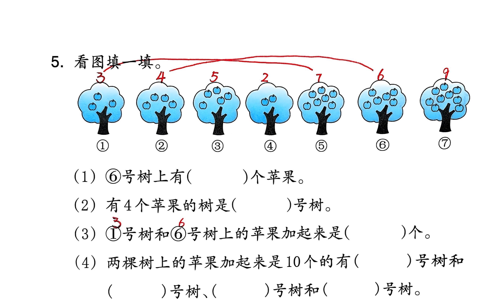
②课作P33的第1题，要说清先算什么再算什么，在先算的下面划上横线，写上得数（没有划线的要用尺补划哦！）
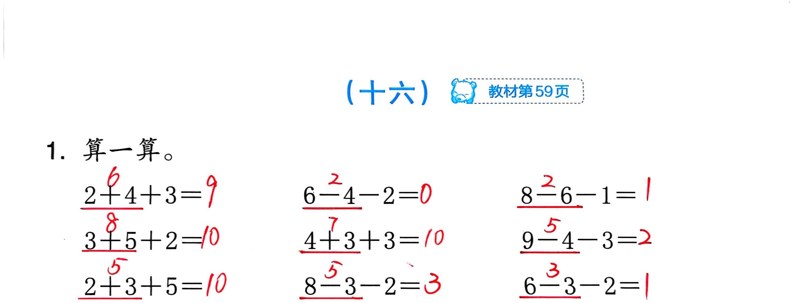
班主任郑老师
- 背字母表
- 拼音大闯关 22、23天
-
看、听
-
昨天背的字母表，今天在自己的本子上默一默，明天可以应对第四单元的练习卷。
- 最后2关，有几个地方要改，如图红笔添加的声调:
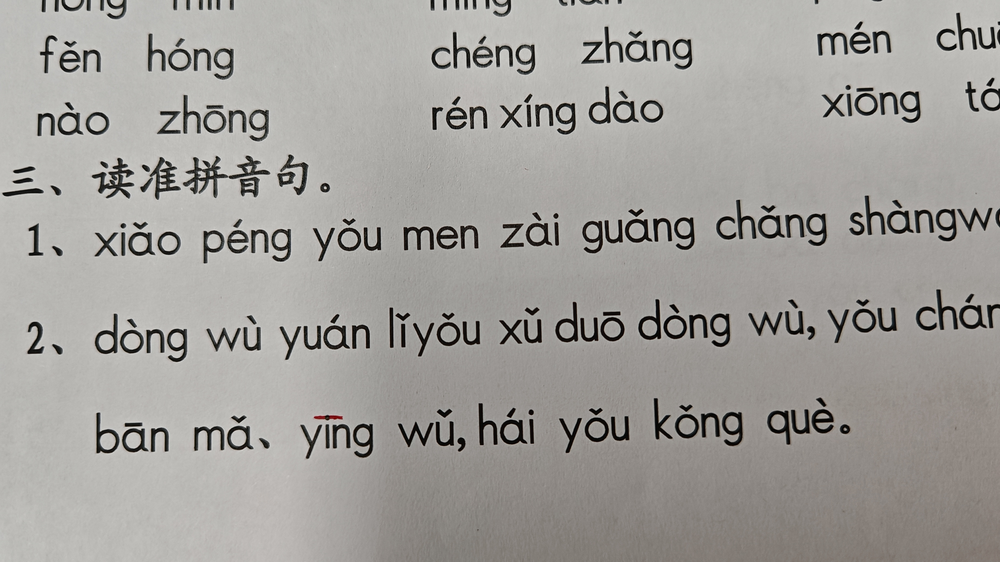
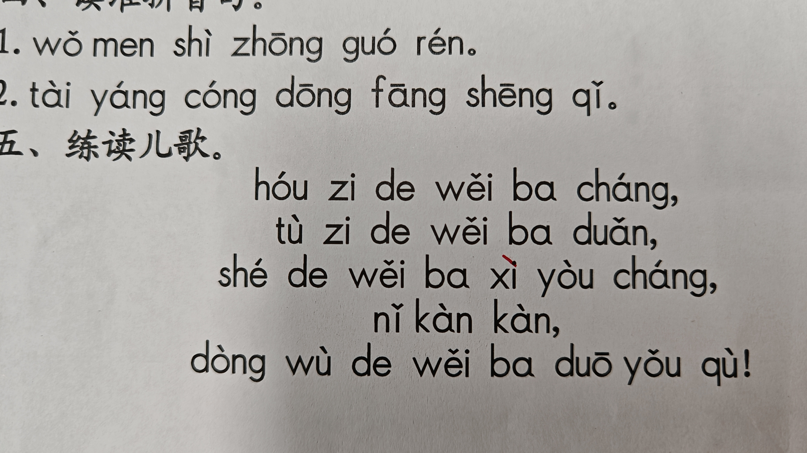
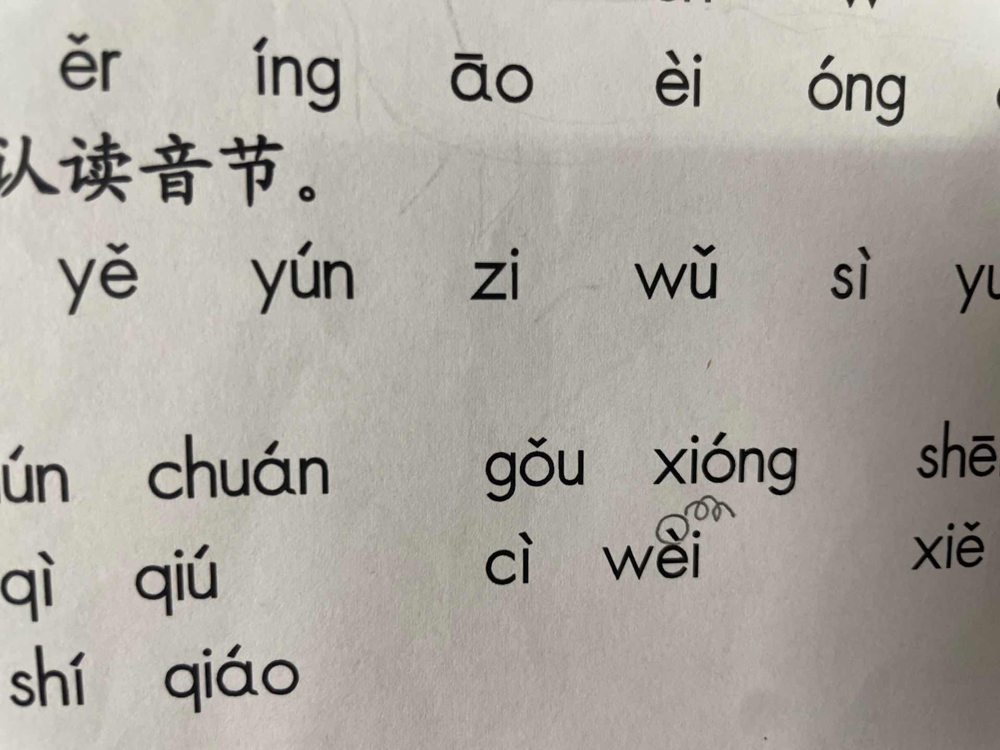
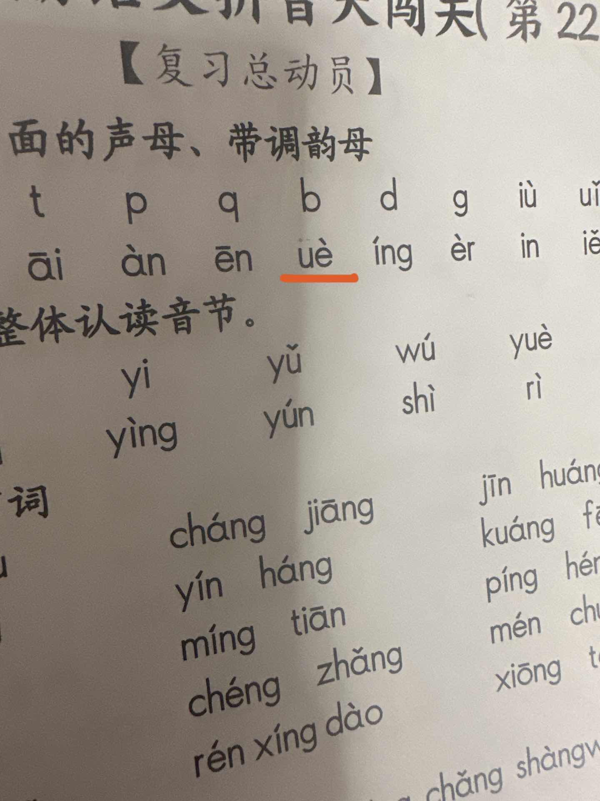
2025.11.10
数学楼老师
今天回家请自查《书》P30，31，《口》P24、25的完成和订正，对错题进行说理。
其他：自行每天1-2页读题，自练口算。
另，看视频背凑十歌～
班主任郑老师
- 读书P56、P57
- 背 P57、P58 表+诗
- 拼音大闯关 P21（可能是21天）
- 带写字本
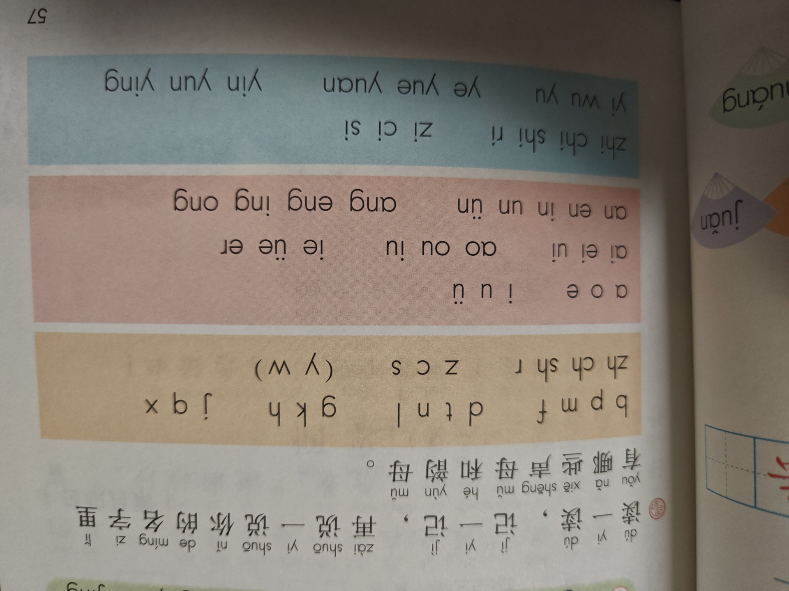
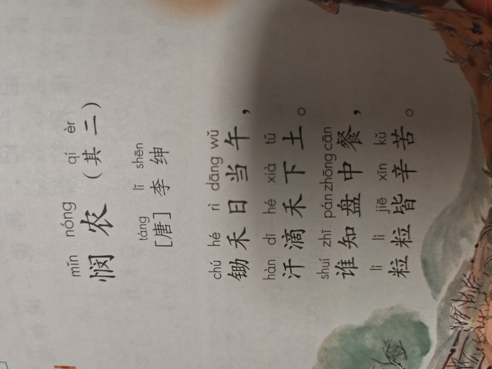
背诵的表＋诗，指的是图中这两个。
声母表已经很熟了，很多孩子可以做到快速背完（口齿要保持清晰），韵母和整体认读音节，继续背，也会越来越熟的。
大闯关最后几天都是复习，不录视频了。
明天有吴老师教的写字，切勿忘记带写字本（上有吴老师的示范字，每个写两行，双休日应该完成了，明天要给吴老师检查）
2025.11.7
数学楼老师
完成《巩固小练习（二）》。（巩固练习纸质稿已发，电子稿家长们可留存）
班主任郑老师
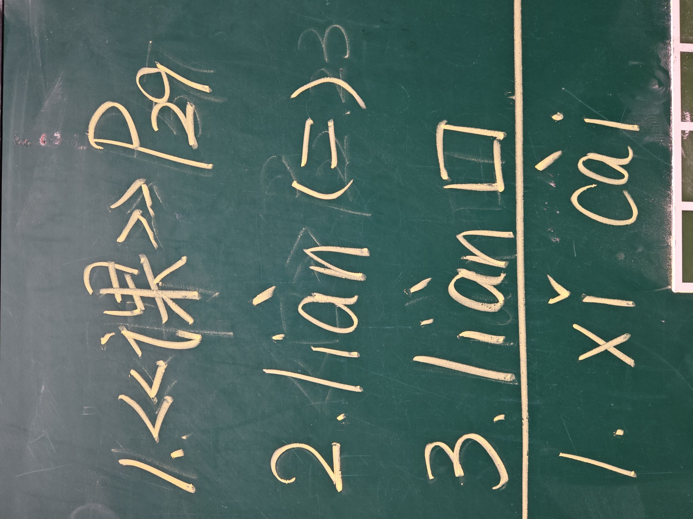
其中“提醒事项”
1是周二的书法课上吴老师教的3个字，每个字写2行（课堂上的本子），有的孩子还没完成，双休补完
2是叫孩子用拼音写自己的姓名，就写在“提醒事项”这栏的第三行。
2025.11.6
数学楼老师
- 《书》P51
- 《口》P22、P23
- 练习口算
今天回家请自查《书》P57，《口》P22、23的完成和订正，对错题进行说理。
其他：自行每天1-2页读题，自练口算。
昨天进行的9以内口算的第一次过关练习卷今天已发回，请关注订正情况～
班主任郑老师
- 拼音大闯关，18天
- 看、听
当学了ai ei ui ie ue er ao ou iu an en in un ün 之后，有的孩子开始认不清楚了，所以， 今天没上新课，回家读大闯关第18天。
如果家长发现自家孩子开始分不清这些复韵母了，别着急，不要强求孩子现在就必须都分清楚。
在学校里，后面，包括学习生字，还会反复再练习拼读，慢慢地，基本都能学会的。
我在班里也多次跟孩子们强调，为什么之前学的单韵母aoeiuü,和声母都越来越熟了？——因为我们读得多了，练得多了。
这就好比这么多老师，还有42个同学，每天看，每天认，自然而然就认识了。
我们既要消除或降低孩子的畏难情绪，也要鼓励孩子，让孩子看到希望，知道只要努力去做，就能学会。
另，前天孩子们纷纷说回家自己练习口算，今天口头问了一句，一半左右的孩子都说已经开始行动了，其中有2个家长还记下了孩子自觉的表现。期待孩子们的口算准确率和速度下一周会有所提高。
2025.11.5
数学楼老师
今天回家请自查《课》P27、28，《口》P20、21的完成和订正，对错题进行说理。
其他：自行每天1-2页读题，自练口算。
昨天进行了9以内口算的第一次过关，情况非常不理想，过关同学较少，很多孩子都没写完，看来从5——7——9，这个坡有的小朋友还是没能稳稳的跟上，口算速度只有适度练习这一个办法，没有捷径，请今晚和孩子好好聊聊后继努力的办法哦！
班主任郑老师
- 《课》P27、P28
- 拼音大闯关，20天、21天
- 看、听
- 打小球
2025.11.4
数学楼老师
各位家长，今天开始学习了图文结合的数学问题，我发现部分小朋友非常“不愿意”看文字，喜欢根据自己的理解只看图就列式，比如数学书P53的这道题，错误率就非常高，分析孩子们的错误原因，主要还是不看问题直接想原来有9个，拿出3个，还剩6个，就写了减法9-3=6。实际只要读读问题，就会发现这样是完全错误的！

因此，今天请家长们一定回家看看孩子这道题有没有订正的痕迹，如果有订正，基本上就是我说的这种情况，这个苗头请大家一定要特别重视，这对后继数学学习非常不利，以后通篇全错都有可能。因此，一定一定要督促这拨孩子，看到题先读文字，找到问题，想清楚用什么方法做。
-
今天回家请自查《课》P26，《书》P52、53，《口》P19的完成和订正，对错题进行说理。
-
其他：自行每天1-2页读题，自练口算。
班主任郑老师
- 读书P49、P50
- 拼音大闯关，14天、15天
- 看、听
- 打小球
今天下午的班队心理健康课，集中表扬了这两个月进步的小朋友，尤其是最近进步明显的孩子。全班绝大多数小朋友也自认为自己有进步，并且能够说得出哪里进步了。
再：数学口算，今天有16个孩子在规定时间内全部完成了。其他孩子都表示，也想能够在规定时间内完成，那要怎样才能做得到？
大家都说：“每天回家练！”
我肯定了他们，强调说：“这跟跳绳一样，每天练习，一定会进步。”
家长朋友们可以关注一下，自家孩子是否说到做到，及时给予肯定和鼓励。也可以及时反馈给我或者楼老师，以便我们在班里再表扬孩子在家的优秀表现，共同努力激发孩子的内驱力。[加油][加油][加油]
2025.11.3
数学楼老师
今天回家请自查口算P18，对课作P25进行说理。
其他：自行每天一页读题，自练口算，准备明天过关。
班主任郑老师
- 读书P47、P48
- 拼音大闯关，12天、13天
- 看、听
- 打小球
2025.10.30
数学楼老师
各位家长，我们今天继续巩固了加减法解决问题，回家请您关注以下几点：
1️⃣自查口算P17，请关注孩子是否已经在校完成，大大表扬已经完成的！
2️⃣对《课作本》P23、24进行读题、释题，特别关注所有的解决问题，一定要问问孩子：
①问题是什么？
②要求这个问题需要知道什么和什么？
③为什么这个问题要用加法（减法）算？
3️⃣自练口算，明天进行7以内二次过关！（预告：下周二9以内一次过关）
班主任郑老师
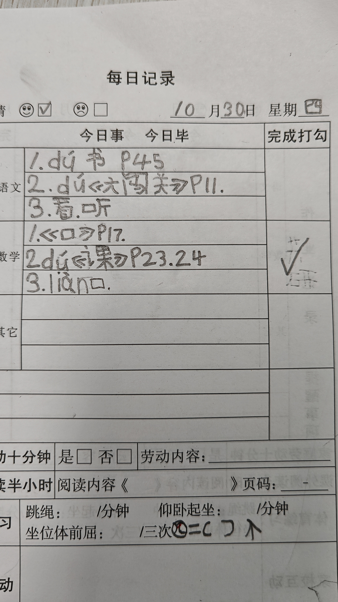
2025.10.29
数学楼老师
各位家长，最近几天的数学课我们在学习“用加减法解决问题”，由于这个内容比较难，因此我放慢了脚步多补充了两节课，课作本也连续两天安排读题，但今天的检测（独立完成课作本）效果还是比较一般，部分小朋友分不清问题在哪里，到底是“求总数用加法”还是“求部分数用减法”，导致作业错误非常多，在这里我想和家长们分享一下主要的解题思路：
1️⃣看到大括号，要知道意思是“一共有……”。
2️⃣大括号带问号，表示一共有几（ ），就需要把两部分合在一起，求总数用加法。
3️⃣大括号带数，表示告诉我们总数，看清楚求哪一部分，求部分数用减法。
今日作业：
①自查口算P16
②对《课作本》P21、22进行说理
③读《数学书》P48、49
④自练口算
班主任郑老师
今天的作业选择潘立伊的家校本。
1、第三单元。指的是第三单元的练习卷已讲评并订正，带回家给家长看。
2、背诵大闯关第10天，指的是“声母、单韵母、整体认读音节”，最好再默一遍。（学校已默写过一次）
这次第三单元题目依然比较难，为了降低难度，昨天和前天，我已根据题目内容练习过，准备过。做卷子之前，每道题，我不仅读给孩子们听，也解读怎么做。这样，大部分孩子有了进步。
那没有进步的孩子，可以找找原因：
之前的作业有按时按要求完成了吗？
上课注意看，注意听了吗？
写的时候，用心记了吗？（实在记不住的，在家可以再抄抄写写，加强记忆）
老师的讲解，听得懂吗？立刻执行了吗？（比如圈画关键词“课间活动”和“劳动技能”）
思维清晰吗？（秩序感较强，懂得按指令做，懂得按顺序做，懂得什么时候该干什么事）
2025.10.28
数学楼老师
各位家长，昨天我们进行了7以内口算的第一次过关，祝贺以下全对过关的小朋友！
班主任郑老师
今天的回家作业选自方艺畅的家校本。
明天第三单元练习，今晚复习第三单元。
有时间的可以默写一遍：
1、声母
2、整体认读音节
这两项在第10天的大闯关上都有汇总。
3、在大闯关5-10天里面选几个音节，写一写。
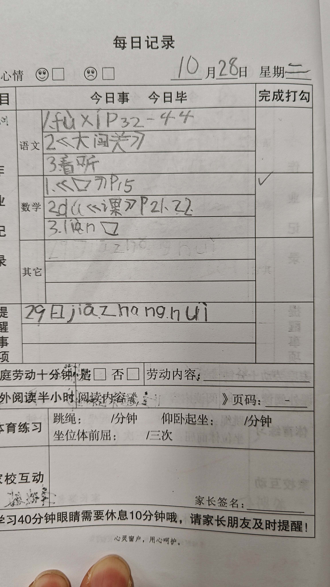
2025.10.27
数学楼老师
1.自查口算14 2.对课作P19、20进行说理，特别关注看一幅图写四个算式，最好能多练几道。 3.读课作P21。
班主任郑老师
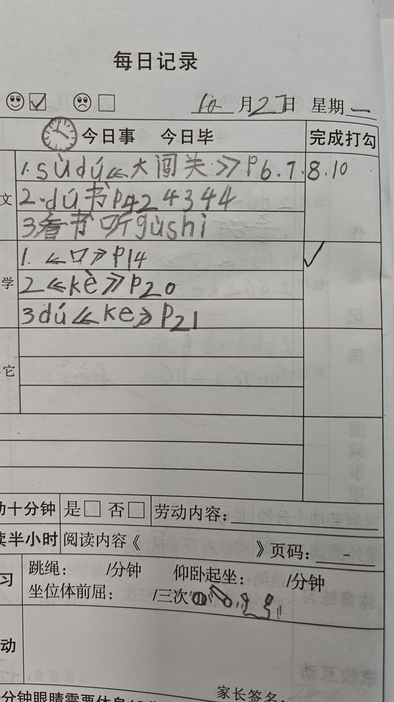
其中第一项“速读《大闯关》6、7、8、10”，指的是看看孩子的熟练程度，根据自己的能力快速读完4关，总计几分钟（记在第一栏作业后面）
再过一两天，我们开始学复韵母了。
之前如果每天按要求完成的话，现在应该比较熟悉或者非常熟悉了。
之前的单韵母和声母不够熟悉，后面的学习会更吃力的，抓住机会，赶紧加油跟上。
2025.10.24
数学楼老师
本周末作业主要是自练口算，并复盘第一单元的收获和不足。下周一我们将进行7以内的口算第一次过关，目前5以内还有3个同学没过关，请继续练习！
2025.10.23
班主任郑老师
- 【君卿老师的拼音童谣】-12-拼读歌
-
读书P20 ~ P41
-
《拼音大闯关第1~10天》
-
看书、听
家长朋友们，明天秋游杭州植物园，请查看注意事项，逐条对照，跟孩子一起做好准备：
1、植物园很大，我们要走很多路，背包要尽可能轻，食物和水够自己吃喝就行，不要多带，不要带垃圾食品（顺便教孩子识别垃圾食品）。
2、一身轻便的服装，一个垃圾袋，一包纸巾（最好是湿纸巾），一本夹树叶用的小本子或小袋子（回家做拼贴画），一张不太大的垫子（每个小组的负责人带即可）
3、书本作业都不带，上学和放学时间也不变，（周五放学是3:10），X班暂停一次，不上
4、身体不适别勉强，在家休息。晕车的，要跟告知班主任轻重程度，并做好相应的措施（比如呕吐袋、晕车贴）。
5、教育孩子一切行动听指挥，切勿擅自离队，包括上厕所也要跟老师打招呼。万一掉队走丢了，一定要原地不动等老师来找。
6、以上内容在班里也跟孩子讲过，家长也可以逐条给点提示问孩子，叫孩子说什么要求。
- 10.29号家长会
2025.10.22
数学楼老师
1 关于单元练习
[钉子]数学单元练习卷的练习板块和评价形式：
1️⃣第一部分为基础知识，第二部分基本计算，第三部分综合应用。最后一项为书写等级。
2️⃣前三板块的成绩等级为：A，A-，B，尚需努力。依次接近原来的：优，良，合格，待评。
[钉子]本次练习采用老师读一题做一题的形式，因此识字能力弱，倾听能力不足的孩子很难取得好成绩。
[钉子]我们班这次练习整体两极分化非常大，接近全对的孩子很多，但也有出现“尚需努力”的孩子。主要问题还是对题目感到“陌生”，不知道题目要我们干什么。这说明平时课作本题目的释题作业还需加强。
[钉子]卷子已经在学校进行了分析，回家后请孩子和家长说说每道错题究竟应该怎么做，家长也和孩子传授一下做卷子的经验。
[钉子]回家订正，家长签名，明天务必带来！！！
2 关于口算过关
今天进行了5以内的二次过关，以下同学已过关，祝贺！
(丁艺峰在今天过关)， 第一次过关的同学是10月17号、一共15位同学. 今天过关是18位同学
3 关于课作本
今天的课作本也采用了独立完成的形式，部分孩子还未订正完，回家也需关注订正情况。
班主任郑老师
- 读书P40、P41
- 《拼音大闯关第9天》 《拼音大闯关第10天》
- 看书、听
2025.10.21
数学楼老师
今天回家要求熟背8、9分合口诀，一定一定要按顺序背熟，不然会严重影响后面的口算学习！
8可以分成1和7， 8可以分成2和6，8可以分成3和5，8可以分成4和4；
1和7合成8，2和6合成8，3和5合成8，4和4合成8。
9可以分成1和8， 9可以分成2和7， 9可以分成3和6，9可以分成4和5；
1和8合成9，2和7合成9，3和6合成9，4和5合成9。
[钉子]自查口算P13。
班主任郑老师
- 读书P38、P39
- 《拼音大闯关第6天》 《拼音大闯关第8天》
- 看书、听
2025.10.20
数学楼老师
今日学习内容：6与7 的分与合
[钉子]今天回家要求熟背分合口诀，一定一定要按顺序背熟，不然会严重影响后面的口算学习！
6可以分成1和5， 6可以分成2和4， 6可以分成3和3；
1和5合成6，2和4合成6，3和3合成6。
7可以分成1和6， 7可以分成2和5， 7可以分成3和4；
1和6合成7，2和5合成7，3和4合成7。
[钉子]自查口算P12和课作P16。
[钉子]复习，准备明天单元练。
班主任郑老师
- 读书P36、P37
- 《拼音大闯关第7天》
- 看书、听
2025.10.17
班主任郑老师
1 《拼音大闯关》1~5，每页至少读1遍。
2 看书
3 听拼音
4 《课》P14、P15
5 练字
6 复习
《拼音大闯关》1~5，每页至少读1遍。
若发现孩子还不熟，请做记号，回头再读。
直到一见就能读，不用多想。
下周继续学拼音，前面的不巩固，后面容易混淆的会越来越多，
跟数学口算一样，有些必要的能力，必须多加练习才会越来越强。
孩子本身的能力有强有弱，有的孩子光靠学校里的练习不够的。
有的孩子学前没学过拼音，但课堂上专注，课后认真完成相应的回家作业，一样学得很好，这样就省时省力又省钱。
大家都刚起步，跟学校老师配合好，共同培养好起始的学习习惯和学习品质，之后才更有可能避免家里因为作业搞得鸡飞狗跳，甚至可能还会越来越轻松。
数学楼老师
2025.10.16
数学楼老师
1.对《课》P14、15进行读题、释题。
2.利用家里的材料分一分，准备6和7的分与合。
2025.10.15
数学楼老师
1.自查《口算》P11。
2.对《课》P12、13进行说理。
3.继续强化昨天的《说规律》，重点说减法表的规律。
4.自主练习口算，周五过关。
班主任郑老师
其中每天的体育锻炼只要记录跳绳和打小球（用擀面杖打）
《大闯关》4的视频，是我和彭一槿合作的
2025.10.14
班主任郑老师
- 学习资源 国家中小学智慧教育平台
数学楼老师
今天要对数学书P32《5以内的加法表》进行找规律、说规律。
类似于这种找规律的训练非常有助于累积孩子的数学语言，促进其有条理的思考，对他的数学观察能力也是一大考验，
由于课堂上时间有限，我们还没有来得及把所有想法都交流完，也来不及反复训练，因此孩子说不全是正常的，
但是希望家长们能有耐心地陪着孩子多说几遍，语言尽可能地规范，日积月累，定会有所收获！（今天课堂学习了加法表，明天学习减法表，可提前准备一下）
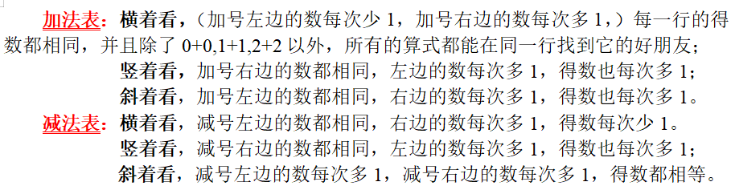
1.自查《口算》P10，争取全对。
2.对数学书P32《5以内的加法表》进行说规律
2025.10.13
班主任郑老师
家长朋友们，今天的回家详见图片（上次的是张灵筠的家校册，今天用的是石子杭的）
今天发了整本的《拼音大闯关》，回家后，这两天请用文件夹保护好，以免破损。
根据昨天家长的反馈，今天读“大闯关”，若遇孩子不会读，或者读不准，或者有争议，可以看视频对照跟读（第三关的视频是我跟孙思媛合作录制的）。 几种用法：
1、问题不大的：先听孩子读一遍，家长不插嘴，不打断，只管给不对或不准的音节做记号，结束后，播放给孩子自己听，到底怎么读，引导他自己对照自己纠正。
2、问题比较多：同样先听孩子读一遍，家长不插嘴，不打断，只管做记号。结束后，叫孩子跟着视频，全部跟读一遍。（听老师读一遍，跟孙思媛一样跟读一遍）
3、问题比较严重：反复听，反复跟读，至少3遍。其它时间继续播放，比如孩子在玩，在吃饭，睡前，不一定要看，不一定要逐个仔细听，但可以循环播放。
希望这个方法能够减轻家长和孩子的负担，同时又培养孩子自学和自主复习的能力，也就是“用好资源”。
数学楼老师
1.对《口》P9进行自查。
2.《看图讲故事五》：把数学故事讲给爸爸妈妈听。
3.翻翻数学书，回忆一下第一单元我们学了什么，完成《一起整理》学习单。
4.将《看图讲故事一、二、三、四、五》整理好，放在家里的资料册里，后面不用带来学校了。
2025.10.11
数学楼老师
各位家长，长假回来已经两天，孩子们能快速适应课堂、积极发言，这些都特别棒！接下来我也有一些想法需要和各位交流，请您务必认真阅读，后期积极配合，如有不同想法也请及时与我沟通！[比心][比心][比心]
[钉子]关于假期的实践作业：我们班《立体图形拼搭》仅上交33份，《身边的数》上交41份，都没有全部完成，请及时补做，这将关系到孩子期末“综合与实践学习”的成绩评定，如果实在不愿意拍照、拍视频，也可采用合适的形式将作业成果上交。
[钉子]关于平时的读题作业：我们班还是存在部分孩子无法独立读题，且平时读题作业几乎不做，一天两天可能看不到差距，一个学期下来那就会无法追赶。学校里我们只能做到集体带读一遍，侧重解题思路分析，无法照顾到每个孩子的个性差异，这还是得辛苦爸爸妈妈们每天带着认几个字，逐渐适应。下周我们将结束第一单元的学习，单元练即将来临！
[钉子]关于每天的自查作业：我们要逐渐培养孩子能主动完成作业的习惯。我一般早晨就会把今天一天的书面作业写在黑板上，要求利用自修课完成。所以回家后，家长们一是要检查是否都完成，没完成的需要提醒和教育，完成的可以开始指导如何进行自我检查。下周我们将进行5以内的口算过关，可以练起来啦！
检查步骤：
一通览，查有没有全部做完
二点读，查错误（读一题，觉得对的，在右边打√）
由于孩子还小，常常对错误视而不见，因此，需要家长协助，发现有错误时，缩小范围让孩子“捉虫子“，比如框定5道题，告诉其中有一题错的，请他”捉一条虫子“，捉出来了就要大大表扬他！
检查能力的培养很难也很重要，这就需要陪伴的力量啦！（建议家长们下载“爱作业”APP，检查方便且便于搜集错题，进行强化练习，具体操作看图片）
唠唠叨叨这么多，我自己都觉得有点啰嗦[害羞]感谢家长们的耐心阅读[送花花][送花花][送花花]今天的作业我等会发家校本。
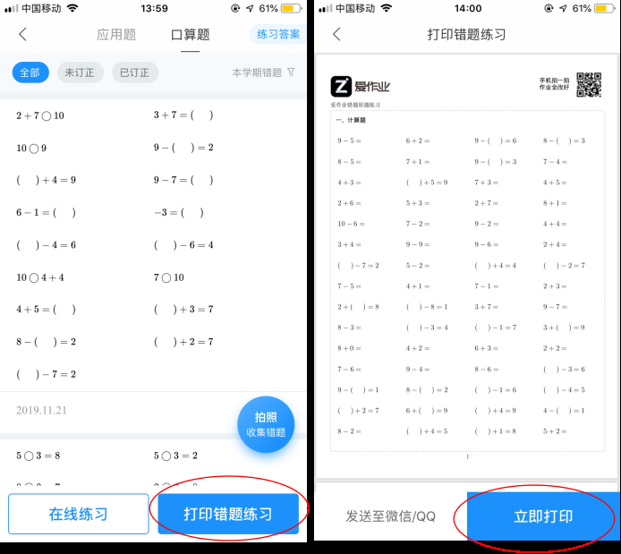
1.完成《看图讲故事（四）》，把数学故事讲给家长听，一定要认识“一共”“还剩”这四个字，书写能力强的孩子学着写一写。
2.对《课作本》P12 、13进行读题和释题，对P8-11上的错题进行说理。
3.自练5以内的口算，准备下周过关。
班主任郑老师
语文：
1、读语文书第24、25页，至少3遍
2、读《拼音大闯关》1、2 3、看课外书，听音频破耳朵
其它：
1、准备1~2根擀面杖（长度30cm，直径2.5左右）（一根放家里，一根放学校。如果只买一根，需要每天带）
2、跳绳、拍小球
家长朋友们：
今天我们学了声母bpmf，以及跟之前学过的韵母进行拼读。
在课堂上，发现四分之一的孩子独立拼读有困难。
课后辅导了几个，还有个别的依然拼不出来。
所以，回家作业，一定要先读书上第24、25页的内容（复习巩固），再读《拼音大闯关》。
其中《拼音大闯关》2，有一些音节，书上是没有的，全靠孩子根据已学技能来拼读，所以，有的孩子可能拼不出来。
家长可以提醒孩子，运用老师教过的秘诀：
先读声母---再读韵母---接着加速重复读---直到拼读出来。
假如孩子依然拼读不出来，也不要责骂孩子。
家长能教的，教一教，隔断时间再问问孩子，看他是否真的学会了。
如果家长教不来，或者说孩子总是记不住，就在这个字母或音节的右侧打个“ ？ ”
下周一，我会再教孩子。[握手]
学拼音有难度，孩子能力有强弱，不随便批评孩子。
只要认真看，专心听，努力做，就一定会越来越好。
我只批评上课不听、不看、不跟着读，不学着写，或者说发呆、讲话、搞小动作玩，提醒了也不改正的孩子。
2025.10.10
班主任郑老师
家长朋友们，今天首次用《家校联系册》，孩子们用自己的方式记录了语数回家作业，大家可以对照一下，孩子记得全不全。
语文回家作业：
1、读iuü（有一张小纸片，明早检查课作本第14页上第2题）
2、看书（即课外书）
3、听拼音（即之前发过的资源）
另外，劳动内容、读的书的书名，孩子有很多字还不会写，家长可以暂时代劳一下。
当天跳绳和打小球的个数，记录在体育类的作业栏里。
家长可以督促孩子自己对照，完成打勾，等全部完成后，再主动请家长签名。
如果有事需要沟通，还是用钉钉比较方便又快捷，“家校互动”这栏里不需要写。
各位家长：
本学期经西湖区统一招投标，我校校服供应商为：蓝天智慧科技集团有限公司。前期已通过家校通知推送公示。
考虑校服制作周期，下半年厂家先制作秋装。请各位家长根据孩子的实际需求，请10月14日前在钉钉平台自愿购买、自主下单（方便统计校服量备货），后续也可以自主下单
（供货时间可能稍迟），钉钉平台下单方式如下：
若有疑问请私信联系我。[抱拳]
数学楼老师
明天有劳动课，请带一件衣服和一双袜子，我们要学习叠衣服。
2025.10.9
班主任郑老师
家长朋友们，今天已告知孩子，明天起，每天要带《家校联系册》了（每天要孩子自己记录回家作业内容，以及完成情况）。麻烦家长提醒并检查孩子有没有放进书包。
今天复习了aoe，检查了每一个孩子的认读情况（打乱顺序，比一比，读一读），发现有四分之一左右的孩子已经忘记了，有的认读特别慢（靠数，而非看字母和声调直接读），有的混淆了四个声调，有的二声上扬发不准确，还有个别的a和o也区分不清楚了。
所以，今晚，请家长叫孩子再读一读放假前发的小练习。明天要学iuü了。[加油]
另外，每天必做的读书，跳绳，打小球，要坚持。明天起，在家校联系册上要记录个数了。
数学楼老师
今天我们校内完成了数学书P28、29和 口算P7，请假的小朋友身体恢复后及时补做。今天回家自查口算P7，错题整理在下面的错题本，并对《课作本》P9进行读题。
提醒：明天所有数学资料都要带！！！
2025.9.27
班主任郑老师
作业内容很简单，每天必做的依然是
1、读书（或听书）（孩子们目前越来越爱读书或听书了[送花花]）
2、跳绳、拍小球（坚持练习的孩子，跟学前比，进步明显，能力、成就感、自信心也水涨船高。[送花花]还做不到连续不间断拍100个的要加油了。自信，不仅仅靠别人鼓励，更要靠磨炼，以及看到自己的进步[加油]）
3、睡前听拼音磨耳朵（昨天今天学了aoe以及四个声调，绝大多数孩子表示学过，学习热情超级高。但当我一个一个检查时，却发现很多孩子一下子读不出来。因此，要坚持磨耳朵，并且按要求完成下面这张练习）
读拼音复习单，每天至少读一次。（已发给孩子）
十天后的目标是看到即会读，不用想。
回校后我们来比赛，看看谁的正确率高，速度又快。[加油]
也可以用合适的资源，更有趣味的玩玩，还可以调倍速。
数学楼老师
亲爱的家长朋友们、可爱的小朋友们，11 天的长假即将开启，这既是放松休息的好时光，也是把数学融入假期生活的好机会~
[钉子]数字书写：认真对待每一个数字书写，迎接集团数字书写大赛。
[钉子]口算过关：用上扑克牌和数字卡片边玩边练，努力成为“口算小达人”！
[钉子]数学活动（纸质稿已发）：
①寻找生活中的立体图形，进行创意拼搭（最好能拍一段视频提交家校本和小朋友分享）；
②寻找生活中的“数朋友”，在生活中玩转数学（10.9带回学校）！
假期里，希望家长们能多陪伴孩子，和孩子一起探索数学的乐趣，不催促、不焦虑，让孩子在轻松的氛围中收获成长。最后，祝愿所有小朋友和家长朋友们度过一个安全、快乐、有意义的长假，咱们10.9再见！（所有电子稿都在班级群文件中，有需要可自取）
2025.9.26
数学楼老师
1.根据算式编写数学故事（下发了作业纸）。
要求一个加法算式编出两类故事，小朋友画一画，家长协助写一写文字：
1️⃣动态：原来……，又……，一共……
2️⃣静态：左边……，右边……，一共……
2.今天校内要求完成口算本P5和P6，请家长看一看，如果还没完成的需要关注一下作业速度和作业自觉性。
家长朋友们，我们已经结束5以内的的口算，将正式开始口算训练。现将口算训练事宜，和您沟通，希望得到您的配合。非常感谢！
-
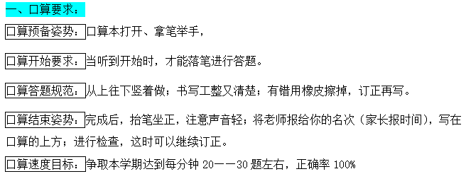
-
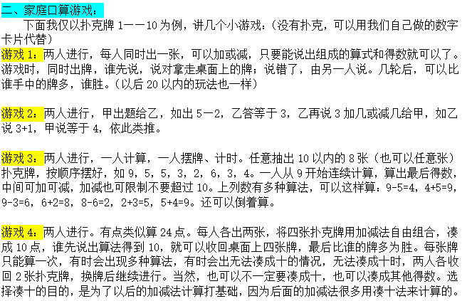
每天，在家，孩子和家长一起用＂扑克牌＂训练口算，是非常好的方法。口算训练是基础，也是一件长期的事情。让我们一起坚持和努力！这里也提供给大家一个口算出题系统，可以一直用到二年级，如有需要可以在电脑上操作、打印。
班主任郑老师
家长朋友们，秋假国庆放假通知已发，详见上面“小助教”发的“家校通知”。
请注意：明天上穿白色（最浅色）衣服，下穿黑色（最深色）裤子，脚穿白色（最浅色）鞋子。
女生的辫子高低要不影响戴面具。
上午按周二的课表上课，下午阅兵式。
放学按周二的时间3：50放学。
所有X班暂停一次。
今天的作业：每天必做的读书，跳绳，拍小球，睡前听拼音磨耳朵。
2025.9.25
班主任郑老师
- 读课外书、跳绳、拍小球、听拼音磨耳朵
今天考查了第一单元学习情况。
第一次要求孩子独立完成题目，但有些字孩子不认识，所以，每道题的题目要求，我读给小朋友听，并简单解读一下怎么做。但有些小朋友遇到只能听，却不能看老师怎么写，还是理解不了，所以成绩不好看。这是正常的，家长请不要焦虑。
后来，当我讲解题目，示范怎么写，为什么这么写，之后，孩子们就懂了。
最后，我说，对自己的成绩不满意的，还想获得更好成绩的话，可以重新做一遍，成绩也可以重新算。
几乎每个孩子都举手表示想要更好的成绩。所以，有的孩子带回两张练习卷。还有几个因为我来不及批完，还没给孩子，明天会发给孩子。
这么做的目的，是激发孩子的上进心，保护孩子对学习的信心和兴趣，培养反思，用行动去改善的意识和能力。[加油]
另外，每天的学习任务，有不明白的，不理解，或者确实有困难没法完成的话，
请直接跟任课老师沟通，
一定要直接找任课老师沟通
一定要亲自找任课老师沟通，钉钉、电话，都可以
数学楼老师
今日数学学习内容：认识减法
1.看图说故事（三），把数学故事说给爸爸妈妈听。答案如下：
（1）原来有5条鱼，游走了2条，还剩3条。
（2）原来有3个苹果，吃掉了1个，还剩1个苹果。
（3）原来有2辆汽车，开走了1辆，还剩1辆。
（4）原来有4杯可乐，喝掉了2杯，还剩2杯。
（5）原来有5颗五角星，剪掉了2颗，还剩3颗。
（6）原来有5个苹果，小刺猬运走了1个，还剩4个。
特别提醒：语言一定要简洁，只说三句话，特别特别关注“原来、还剩”这两个词的使用（会认、会用），数学语言的积累很重要哦！
-
练习数字书写，至少认真书写半张，鼓励写完一张。
-
明天有数学课，务必带数学学习用品。
2025.9.24
班主任郑老师
1、周六全校阅兵式，我们要戴“萌狮面具”进场。 请家长帮忙，帮孩子找准位置，开挖两个洞洞（如图） 再帮孩子找准头带的固定位置（如图），控制好长短。 让头带架在耳朵上，以防掉下滑到脖子。 扎辫子的女生，周六的辫子要扎在头带下。 写好班级姓名，明天回收，以防周六正式用时出现状况来不及弥补。
2、周六阅兵式，我们穿着尽量统一，上穿白色T恤（没有白色就穿最浅颜色），下穿黑色长裤（没有黑色就穿最深颜色），脚穿白色运动鞋（没有白色就穿最浅之色）
以下内容是作业及问题说明：
1.复习第一单元，再读语文书本和新老词语表。 有的孩子对于四字词语很陌生，读不出来，这跟正常。因为这是给识字量比较大的孩子提升的内容，学校教过一遍两遍，还不能完全记住。但只要每天读一遍两遍，就一定能记住。
2.书空第一单元的生字，并说笔顺。 目前有几个孩子还是喜欢按自己喜欢的顺序写，不听老师的要求，也不跟老师的指令立刻行动或改正，又或者是注意力不集中，跟不上要求。时间久了，这样会很吃亏。到了考察的时候，就算是错的，影响成绩。因此，学习时，专心，听话，照做，这几个基本的学习能力，对于获得好成绩有极大的帮助。
3.专注力等各种能力，自信等各种优秀的品质，都是可以训练出来的。而每天的学习任务，回家作业，包括锻炼或劳动，都等同于训练。 对孩子有期望的家长，一定要在这个阶段，多花点时间和精力，帮助孩子养成基本的优良习惯。基础打好了（不强求完美，但不能差太远），以后才可能越来越轻松。
4.九月过渡期，作业内容全靠钉钉发布。十月国庆之后，每天的回家作业，我们会要求孩子自己记录了。到时候，大家可以对照钉钉家校本，看孩子在纸质家校本上有没有记全。次日，老师会再检查，包括每天的锻炼和阅读任务完成情况。
数学楼老师
1.对《课堂作业本》第6、7页进行说理，对第8页进行读题、释题，家长左上角进行评价。
2.练习数字书写，至少认真书写半张，鼓励写完一张。
3.熟练5以内的加法，要求脱口而出。
2025.9.23
数学楼老师
- 对《课堂作业本》第6、7页进行读题、释题，家长在左上角进行评价。
- 完成《看图说故事（二）》，先讲故事，再列算式。
- 练习数字书写，至少完成9和0各两行，书写能力的强的孩子完成整张书写。
- 温馨提醒：明天有劳动课，需要给自己的桌子“洗澡”和学习系鞋带，请做好相关准备。
班主任郑老师
1、第一单元即将上完，复习新词语表，详见群里文件。
2、在家尝试听写生字（自己的本子），即课后要求会写的字，包括笔顺（P108页“识字”汇总了第一单元要求会写的字）明天在校听写。
3、明天带双面胶或固体胶，剪刀，棕色彩笔，黑色勾线笔。
4、读书、跳绳、拍小球
5、睡前听拼音磨耳朵
2025.9.22
数学楼老师
1、书写练习练习6.7.8各一行。
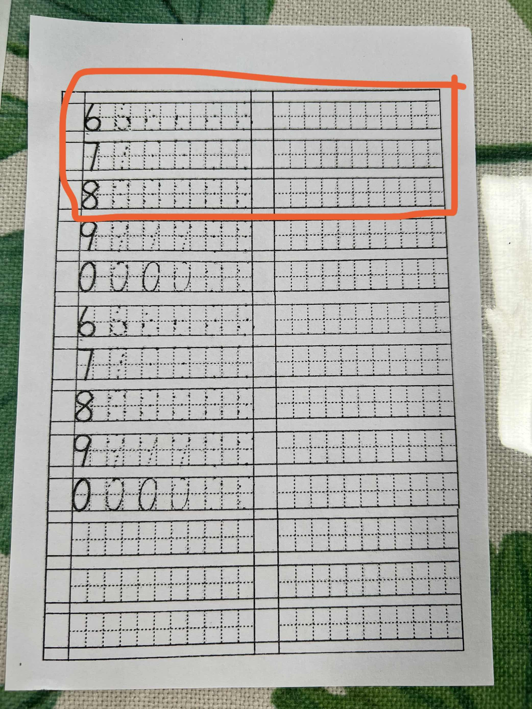
2、 完成《看图说故事（一）》，先讲数学故事，并画出点子图、列出算式。（校内大部分小朋友已经自己说了一遍，基本完成，回家还是要和家长分享，练习数学语言的表达，请家长关注量词的正确使用）
答案如下：
1）饮料有3瓶，可乐有2瓶，一共有5瓶。○○○ ○○ 3+2=5
2）梨有1个，苹果有2个，梨和苹果一共有3个。 ○ ○○ 1+2=3
3）原来有4辆汽车，又开来1辆，现在一共有5辆汽车。 ○○○○ ○ 4+1=5
4）树上原来有1只小鸟，又飞来了3只，现在一共有4只。 ○ ○○○ 1+3=4
5）左边有2杯饮料，右边有2杯饮料，一共有4杯饮料。 ○○ ○○ 2+2=4
6）左边有3本书，右边有2本书，一共有5本书。 ○○○ ○○ 3+2=5
班主任郑老师
1、读、背园地一（P15、16页词语表，背两首诗）
2、复习识字1-4（每张词语表连读2遍，P10-P16页的生字，边书空，书空就是用手指凌空写或用手指在桌上写，边写边说笔顺）
3、跳绳、打小球
4、收好体检二维码，今明可查看
5、睡前听拼音朗读磨耳朵
道德与法治苏老师
- 下发的道法评价表，需要孩子们把它粘贴到书本翻开第一页，就折起来贴就好了
2025.9.21
班主任郑老师
- 家长朋友们，下周后半周要开始学拼音了。
- 有的孩子在上学前学过，有的没接触过，为了帮助没接触过的孩子更加轻松顺利地学好拼音，我找了个磨耳朵版的资源。
- 大家只要每天放给孩子听即可，比如睡前播放一遍，不需要孩子认认真真看着书听读。
- 小红书链接
2025.9.19
班主任郑老师
1、读识字4，及词语表，至少3遍（签名+几遍）
2、说“日、火、田、禾”的笔顺及名称（如P14页的日：竖、横折、横、横“）
3、玩玩组词游戏
4、读课外书、跳绳
5、拍球（最后2天，争取连拍到100个）
6、可以再折”手里炮“玩（对得更齐，折得更平，打得更响）
数学楼老师
1.读一年级常见字三遍以上。
-
自主练习数字书写，下周一我们将进行一次书写小过关。 要求：在空白日字格中，自己点点位，每个数字写3个。 合格：点位正确，字迹工整。 优秀：点位正确，字迹工整美观，卷面干净。
-
熟记1-5的分与合，为下周学习加减法做好准备。
-
做一份0--9的数字卡片。
英语兴趣班（楚筱汀）
感谢您为孩子选择双语职业体验官2025秋季课程，此班为双语体验2阶15班（可关注群头像信息）。
⭐️课程时间：周五16:30-18:00（两节课之间10分钟请家长照看好自己的孩子，进行补水、如厕等安全活动）
⭐️地址：Do都城少儿社会体验馆（杭州市钱江新城市民中心K座杭州市青少年发展中心2号门）。
⭐️课程总结：每周课程结束后会在群内发布活动总结，便于家长及时了解课程内容及教学动态。
⭐️课程请假：需要请假的孩子，请课前私信任课老师。
⭐️沟通回复：为保障教学质量和安全，课程期间老师不回复信息。为了不打扰其他家长休息，个人问题私信老师。
⭐️每次上课请携带纸巾（湿巾）及水杯。
2025.9.18
班主任郑老师
1、读识字4词语表（至少3遍）+组词游戏（日、月、山、川）
2、叫孩子记住1分钟跳绳和连拍小球的个数，明天告诉我。
3、读课外书
数学楼老师
数学学习内容：巩固课（比大小、几和第几、分与合） 回家作业：
1.练习数字书写，每个数字练半行。要求：先数数昨天的星数，今天要比昨天多，达到20星以上的同学可以不描点直接写。
-
继续练习分与合的口答，今天要求写。
-
对课作本P5进行读题和释题，家长左上角评价，不要写哦！
2025.9.17
班主任郑老师
1、再玩组词游戏（重点选择：天、地、上、口、手）
2、预习识字4（只要认读P13、14页）
3、跳绳（请家长告诉孩子1分钟跳了几个）
4、拍小球（今天争取连拍到50个以上）
5、读课外书
数学楼老师
1.对今天所学的分与合进行练习、巩固。（对照《口答练习：5以内的分与合》进行口答，要求快速、准确，能达到不假思索的脱口而出，明天记得带来学校！）
2.对《课堂作业本》第2、3页进行说理，第4页进行读题、释题，家长左上角评价。
3.大大表扬《口算训练》第3页能在校内自修课自主完成的孩子，将自己或爸爸妈妈检查出来的错误订正后在下面的横线上再写一遍。
2025.9.16
数学楼老师
1.书写练习（每个数字练半行，先找点位再书写，明日目标：10颗星）。
2.对《课堂作业本》第2页进行复读（孩子独立读题）；对第3页进行读题、释题，家长在第3页左上角进行评价。
3.和爸爸、妈妈讲“第三个汉堡的故事”，说说为什么小熊越来越瘦了。
①明天要交练字纸，一定检查一下姓名有没有写哦！
②明天下午有劳动课，请准备好小抹布或湿巾纸，也可以是妈妈洗脸用的洗脸纸巾（多带两张），我们要给自己的桌子“洗个澡”[呲牙]
班主任郑老师
1、与家长玩组词游戏（详见后文）
2、读课外书
3、跳绳
4、拍小球
- 组词游戏：
-
- 第一步：选一个字（范围在语文书P8-P9页
-
- 第二步：比如选了”天“，一人先“天、天、天空的天”，另一人同样的节奏接“天、天、天下的天”，词语不能重复，如果重复了，或者一人接不下去了，或者节奏明显慢多了，卡住了，就算输。
-
- 此游戏可训练孩子的词汇量，反应力，节奏感，心理素质等等。
2025.9.15
班主任郑老师
1、识字3《口耳目手足》指读至少3遍（顺读、倒读、跳读）
2、词语表《识字3口耳目手足》的每个词语至少读3遍（双休日应该粘贴好，今天检查还有个别没贴好，如果没法打印，私聊我）
3、拍网球（记住最高记录，能连拍几个）
4、读课外书（要求不变） 5、跳绳（要求不变）
5、 拍网球100个
6、市民卡已经还给孩子们
数学楼老师
1.对《课堂作业本》第1页进说理。家长在作业本左上角进行评价。 说理（为什么这样做）：语言准确、条理清晰、说理正确，可评为五星。
2.对《课堂作业本》第2页进读题、释题。家长在左上角进行评价。
3.练习书写数字，今天下发了新的练字纸。每个数字写半行（只写描的部分，复习点位，慢慢写）
道德与法治苏老师
各位家长，今天道德与法治课我们组织同学们观看【全国大中小学生同上一堂思政大课】，
明天的道德与法治课我们要组织同学们创作相关的儿童画，请大家带好涂色工具。
2025.9.12
英语老师反馈
- 班上孩子大多是有基础，壮壮是0基础。所以要在家多练习英语
- 英语点读网站
- 群里有发《人教版PEP 一年级上册配套音视频》
班主任郑老师(提醒)
-
1 下周一把市民卡带到学校去,跟社区医院签约
-
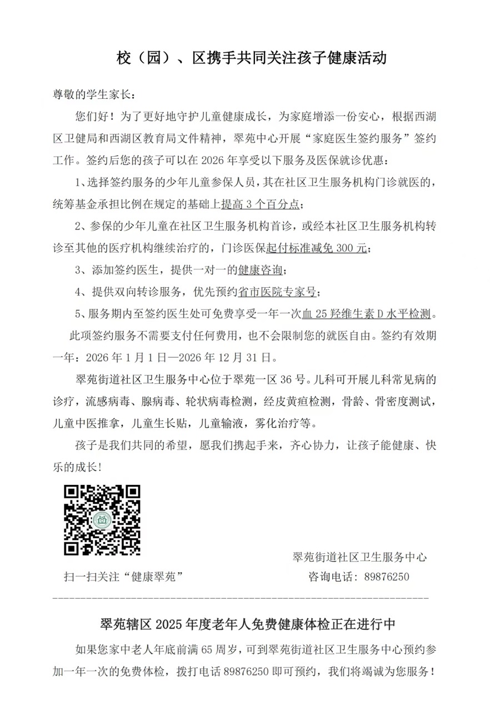
数学楼老师
- 数字书写：已学 1-5，建议每天 5-10 分钟陪练，一定要先观察范例定好点再写，多鼓励少批评。数字书写一定不能单纯地理解成只要会写数字就可以了，现在的练习主要是为了培养孩子们小手的控制力、观察力、耐心和毅力，“会观察”才能“会思考”，持续学习更是需要耐心和毅力。我们班现在还有1个孩子完全不能找到点位进行书写，趁着周末一定一定花点时间多多练习，找到书写的感觉！
-
学习准备：每晚和孩子整理书包，所有数学书本练习+练字纸+ 6支削尖的HB 铅笔、软橡皮、尺子天天都要带，帮助孩子养成习惯。
-
1.继续练习数字书写，完成整张练字纸上未书写的部分。（个别提前完成的孩子，请修改重写没打星的数字） 2.在自己的纸上继续练习连线。
-
另外群里有发优秀作业
班主任郑老师(回家作业)
1、复习1：识字1、2，再各背3遍.
2、将群里的《一上词语积累2025》打印出来，按要求粘贴在各处。
3、复习2：读《一上词语积累2025》之《天地人》《金木水火土》中的词语，每个词语各读3遍。（下周将进行游戏PK，能干的孩子可再扩展能理解的词语）
4、读N本绘本或N页课外书（也可以带孩子去书城或图书馆借阅）
5、要签约的孩子，下周一带市民卡（详见群里相关通知）
6、看视频，再折一架及一架以上的纸飞机。
7、下周一带一个网球（写好班级、学号或姓名，专门放在学校里）
8、每天跳绳至少2次，每次1分钟。
班主任郑老师 (给家长的第一封信)
-
核心观点是: 孩子做的好的时候多夸一夸,训练整理能力(整理能力是学习的核心、也是将来工作的核心), 多运动
英语兴趣班（楚筱汀）
各位家长好！
感谢您为孩子选择双语职业体验官2025秋季课程，此班为双语体验2阶15班（可关注群头像信息）。
- ⭐️课程时间：周五16:30-18:00（两节课之间10分钟请家长照看好自己的孩子，进行补水、如厕等安全活动）
- ⭐️地址：Do都城少儿社会体验馆（杭州市钱江新城市民中心K座杭州市青少年发展中心2号门）。
- ⭐️教室：每周根据职业角色不同会更换教室（具体请查看教室安排表）
- ⭐️课程总结：每周课程结束后会在群内发布活动总结，便于家长及时了解课程内容及教学动态。
- ⭐️课程请假：需要请假的孩子，请课前私信任课老师。
- ⭐️沟通回复：为保障教学质量和安全，课程期间老师不回复信息。为了不打扰其他家长休息，个人问题私信老师。
- ⭐️每次上课请携带纸巾（湿巾）及水杯。
- ⭐️⭐️9月19日（下周五）正式开课。
- ⭐️⭐️请在【周日之前】将【群昵称】改成中文名➕英文名，如陈超Eric，并让孩子熟悉自己的英文名。为减少陌生感和距离感，可以提前告诉孩子老师的英文名是Celia[送花花]
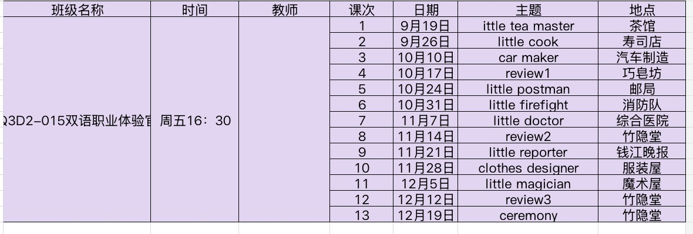
2025.9.11
学校通告
- 校服采购
数学楼老师
- 1 今天学习了《比大小》，回家后请进行比大小练习。（至少练5组）
-
- 1.1 让孩子自己摆学具，说一说比的方法。
例：橘子有3个，桃子有3个，橘子和桃子同样多，3等于3。
茄子有2个，橘子有5个，茄子少，橘子多，2小于5。
-
- 1.2 家长摆5以内的物品比较，孩子快速说出或摆出大小比较的式子。
例：家长摆4支铅笔，3块橡皮，学生摆并说出：4＞3。
- 2 练习书写3、4、5、＝、＞、＜各半行。下图标红部分。
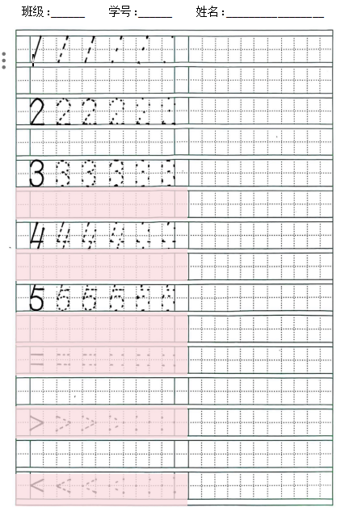
-
3 在自己的纸上继续练习用尺连线。
-
4 特别提醒，明天虽然没有数学课，但数学书、课作本、口算训练、练字纸都要带！千万别忘记！！！
班主任郑老师
1、背诵识字2《金木水火土》至少3遍，签名（家长姓名、背了几遍）
2、准备网球至少2个（一个放家里，一个放学校，下周一开始学习练习）
3、读一本绘本或N页书
4、跳绳至少2次，每次1分钟
2025.9.10
数学楼老师
数学学习内容：学写数字3、4、5
回家作业：
1.对数学《课作本》第1页进行读题，家长在《课作本》左上角进行评价。
2.练习书写数字3、4、5各一行。一定一定先找点位，再写数字。
3.练习用直尺连线，《口算训练》还未通过的，用橡皮擦干净重新连，明天给我复批。
班主任郑老师
1.识字1天地人你我他，指读至少3遍。（指读，即左手压书本，右手食指点字，点哪个，就读哪个）
2.读一本绘本，或课外书N页
3.跳绳至少2次，每次1分钟
4.记得指导孩子整理自己的书包及每天必带的物品，家长只动口指点，不动手操作。除非孩子学不会，需要示范。会不会整理，是会影响学习的哦，一定要重视。
2025.9.9
班主任郑老师
回家作业
1、语文： 可预习识字1（P8页）不会读的不强求，会读可以说说能说几个“天”，或者几个“地”，几个“人”。即“天--晴天、雨天、天空、上天……”
2、锻炼： 每天至少跳2次，每次1分钟，能跳多少是多少，每天进步，每周进步，都是好样的。
3、读一本书（绘本）或N页课外书。
4、今天发了一本数学口算训练，请及时写好班级姓名学号，包好书皮。
说明： 截止时间为19点，只是为了提醒还没完成的小朋友，不用提交什么，家长监督孩子及时完成即可。
数学（楼老师）
- 1 今天下发了《校本口算训练》，请包好书皮，如果之前下发的课作本和数学书还未包的，今天务必包好，明天我将检查奖励！
- 2 今天还下发了三张标签贴，分别贴在数学书、数学课作本、口算训练的左上角，家长用黑色水笔正楷写上101+学号，姓名。（便于后期小朋友发本子、认名字）
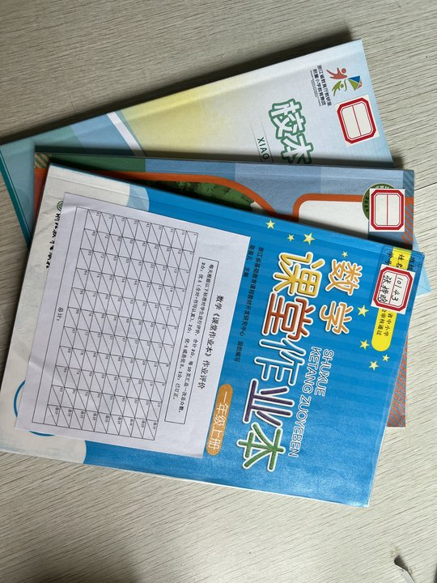
- 3 数学课作本需要贴“评价表”，请贴在指定位置，尽量用双面胶贴牢固。
{kind=link}
{kind=link}
- 4 继续练习书写，1、2各一行，不要多，但要每个字都写在日字格里，先找点位，再书写，以今天学校我打星的字为标准，如果不够好，用橡皮擦掉重新写。注意培养孩子的耐心和毅力！！！
2025.9.8
班主任郑老师
- 回家作业
1、读一本绘本，或N页课外书
2、语文书2-6页，至少读一遍
3、明天有体康运动会，穿运动鞋，带跳绳
体检通知
{kind=link}
数学（楼老师）
各位家长，今天的数学课我们正式开始学习书写数字“1”和“2”，很多小朋友都不太适应“写一个、空一格”和“按点位书写”，回家后需要再找找书写的感觉，注意：1️⃣用削尖的铅笔写，2️⃣没写好的数字擦干净再重写，3️⃣严格按点位写，4️⃣只写1和2各一行（参考范例）。念着口诀多练练，争取明天能多得到几颗五角星。现将空白书写练习、视频发在班级群里，您可以下载使用。
- 口诀：
-
- 1：右上角，左下角，笔直笔直小木棍。
-
- 2：左中，上中，右中，左下，右下，圆脑袋，长脖子，尾巴浮在水面上。
班主任郑老师
1、读一本绘本，或N页课外书
2、语文书2-6页，至少读一遍
3、明天有体康运动会，穿运动鞋，带跳绳
2025.9.7
周日日常训练
- 跳绳300个(一次最多60个左右)
- 稍微练习侧手翻、弓步蹲、跳等; 稍微练习拉伸
- 和军宝一起玩, 接力跑
班主任郑老师
请注意以下重要信息：
1、明天开始正式按课表上课，要带相应的课本。其中语文除了课本，还有两本《写字》。
2、X班，基础晚托班，明天开始，请务必注意接孩子的时间变化。不上X课或托管班的孩子，照旧3：50分放学。
3、今晚请务必指导孩子检查并整理好明天要带的学习用品和要交的作业或任务（详见周五的语数体育老师交待的内容）
4、明天上午8：20分要排队去操场升国旗仪式，大家根据孩子的动作快慢，在8：10分左右进校，让孩子有个充分的课前整理时间。
综合事项
- 2025.9.7 上午郑老师来家里家访
2025.9.6
班主任郑老师
下周一开始混合基础托管，北校区在一楼101教室。
- 混合基础托管班，就是3：50放学后，没有去处，而家中没人接送的孩子，全校1-6年级这样的学生集中在一个教室，自己安静自修，一二年级学生到5点结束。
- 请注意，一二年级孩子不适合这么长时间安静自修，所以，确实哪几天有接送困难，再考虑让孩子报这个混合基础托管。
- 确定需要的话，再私聊我，并告诉我哪几天需要托管
2025.9.5
数学楼老师
各位家长，经过一个星期的入学课程学习，我们班大部分小朋友已经能在数学课前做好课前准备，一边念儿歌一边等待上课，课堂上也学会了想发言先举手，努力大声把话说清楚，周末请爸爸妈妈们和小朋友一起完成以下几件事：
1.数一数数学书上的小印章，说说自己做得好的地方，及时表扬，也说说自己做得不够好的地方，下周改正。
2.准备好数学学习用品每天带来学校：6支削尖的HB铅笔、橡皮、直尺、包好封面的数学书+课作本。
体育浦老师
-
着装要求：每天都有体育课以及体育活动，请让孩子穿着便于活动的运动服、运动裤和运动鞋，确保运动时不受束缚，避免穿着凉鞋、皮鞋或有装饰物的鞋子，女生不穿裙子。
-
物品准备：跳绳每天带，当前天气炎热，孩子们运动后汗也出的比较多，建议为孩子准备一块小毛巾或者衣服里面衬一块汗巾，方便运动后及时擦拭，保持干爽。
-
健康告知：若孩子近期做过手术、仍处于恢复期，或患有其他需要特殊注意的身体疾病，请务必提前通过私信等方式告知我。这能帮助我在课堂上更好地关注孩子，采取适当的保护措施，共同守护孩子的健康与安全
班主任郑老师 1
双休日需完成的学习任务：
1、麻烦家长完成体质健康查询表（周一交）
2、读语文书第6页（坐姿正确，家长签名+已读几遍）
3、写趣味控笔（写多少个，随意，重在兴趣，不要强迫孩子非要写完，但要保持坐姿正确：头正身直手放平，一拳一尺又一寸。今天只学了坐姿，还没学握姿，不要强求）（记得写好班级姓名学号）
4、读至少一本课外书（多少页码的书，随意，兴趣更重要。今天我给大家读了一本绘本《你看起来好像很好吃》，孩子们非常喜欢。）
以上重点在于培养孩子追求作业及时完成和优秀的意识和行为习惯，质量效果可根据孩子的情况调整。
班主任郑老师 2
入学第一周，孩子们的表现令人满意。
会听指挥，会按要求做。专注力、执行力，适应力，整体比较强；
以上几项，是学习结果优秀的根本能力，令人期待。
家长中联系了多个，都非常善于沟通，善于换位思考，替老师着想，信任老师，还能想到老师管理教导43个初次相识的懵懂小孩，非常辛苦。
老师们也更放心更愿意尽所能对孩子们多加关注。
今天下午入学课程的结业仪式上，学校给每个孩子发了一粒种子，回家可以种植，顺便观察长出来的会是什么？[偷笑]
我也给每个孩子买了小狮子冰箱贴，今天送给了“小萌狮”们。
希望孩子们喜欢，能够感到上小学，不仅能学到本领，还有喜欢的老师，喜欢的课程，偶尔还有小惊喜，从而感到学习是快乐的！[憨笑]
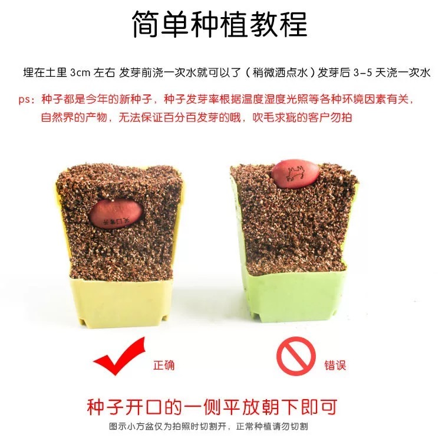
综合事项
- 2025.9.5号 丁艺峰因为老是和同桌说话，同桌被调走，开始独自一个人坐.
二 老师性格特点
1 郑老师
- 郑老师相对直接一些
- 郑老师从不承诺什么
-
- 1 2025.9.9 郑老师在群里说无论送不送老师对孩子都一样
-
- 2 2025.9.7 郑老师来家里跟丁艺峰说，如果丁艺峰有重要的事情要及时报告老师，如果老师忙的话怎么办？那就待会儿再说
2 楼老师
- 比较注重话术, 说话比较绕